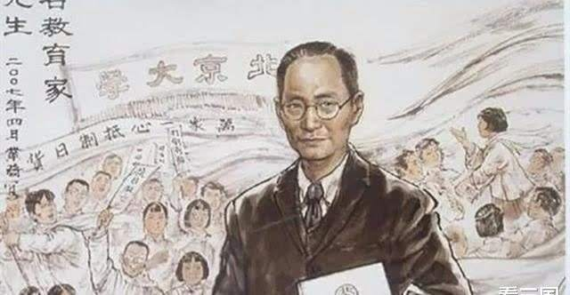
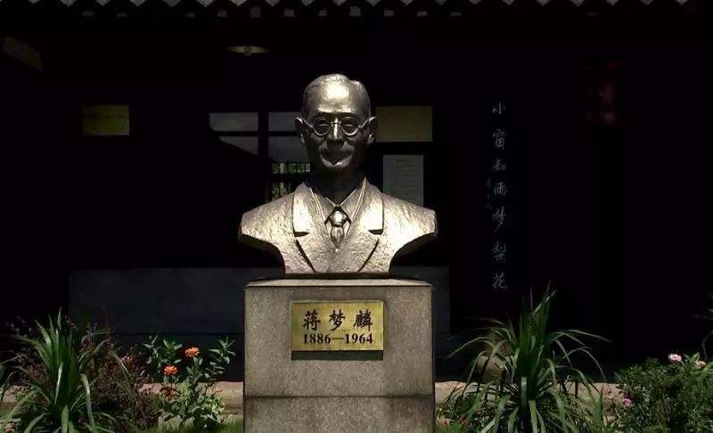
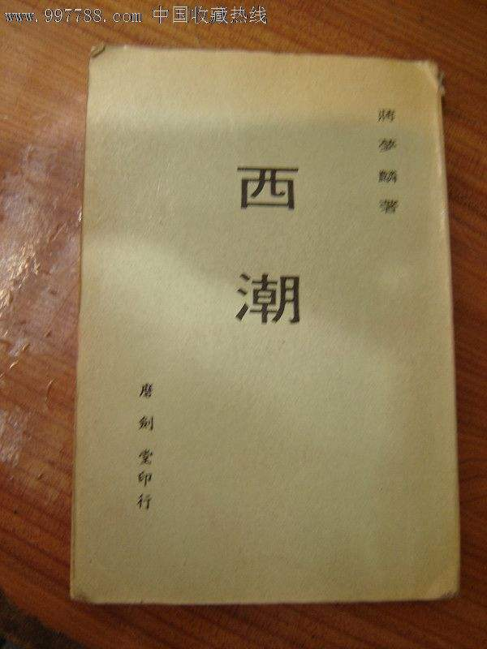

·Introduction

Jiang Menglin's photo
Jiang Menglin (January 20, 1886 - June 19, 1964), formerly known as Mengxiong,
courtesy name Zhaoxian, and No. Menglin,
was born in Yuyao, Zhejiang, and is a famous educator in modern China.
On January 20, 1886, Jiang Menglin was born in Yuyao, Zhejiang.
He once participated in the imperial examinations and was highly talented.
In 1912, he graduated from the University of California, Berkeley, with a bachelor's degree in education,
and then went to the Columbia University Research Institute in New York, where he studied under Dewey,
and obtained a doctorate in philosophy and education. He served as the first Minister of Education of
the Nationalist Government, Secretary-General of the Executive Yuan, and the longest-serving president
in the history of Peking University. In 1949, he went to Taiwan with the Kuomintang regime.
On June 19, 1964, Jiang Menglin died of liver cancer in Taipei, Taiwan at the age of 78.
·Biography

In 1898, he entered the Shaoxing Chinese and Western School, where Cai Yuanpei happened to be the "supervisor" (equivalent to the principal).
In 1899, he moved to Shanghai with his family and entered a Catholic school to study English.
In 1900, due to the Boxer Rebellion, the family moved back to Yuyao and studied English and arithmetic in a school in Yuyao City.
In 1904, he was admitted to Shanghai Nanyang Public School.
In August 1908, he went to study in the United States.
In 1920, on the first anniversary of the May 4th Movement, he published "Our Hope for Students" with Hu Shi.
In 1920, Cai Yuanpei went abroad to investigate, and Jiang Menglin once again represented Peking University.
In December 1937, he went to Hankou and suggested to Chiang Kai-shek, the leader of the Nationalist government, to move the temporary university to Kunming.
In February 1938, he flew from Changsha to Hong Kong, then took a French cruise ship to Haiphong, Vietnam, took a train from Haiphong to Hanoi,
and then took the Yunnan-Vietnam Railway train from Hanoi to Kunming, where he was involved in the preparation of the new school site.
·Thoughts

Jiang Menglin had been engaged in the cause of education for many years and made a significant contribution to the development of modern Chinese education
as well as education theory research. In his PhD thesis A Study in Chinese Principles of Education, Jiang Menglin used modern methods to analyze these
educational principles throughout Chinese history and compared them with the same cases in Western culture.
Later, in his articles published in the press, he put forward his own education propositions. He believed that the education in the twentieth century was scientific education;
the long-term aim of education was to “take in the quintessence of Chinese culture, assimilate the spirit of modern world, set standards, and track down problems” to cultivate
“scientific spirit” and “social consciousness”. In educational administration, Jiang Menglin advocated the implementation of compulsory education, vocational education and remedial education,
and he believed that specialized education and scout education should be equally valued with higher education.
As for education content, Jiang Menglin encouraged the development of individuality, focused on aesthetic and physical education, paid attention to the transmission of scientific knowledge,
vocational cultivation and citizenship training, and promoted populist democracy and the spirit of independent and perseverance. He agreed that students should have healthy mentality and ability of precise and clear thinking.
It was also important to develop their personality and train professionals.
·Works

"West Tide" (autobiography in English, later translated into Chinese)
"Meng Lin Wen Cun"
"Talking about Knowledge"
"Cultural Exchange and the Evolution of Ideas"
"New Trend"
·Reference
Jiang Menglin - BaiduJiang Menglin - WiKipedia